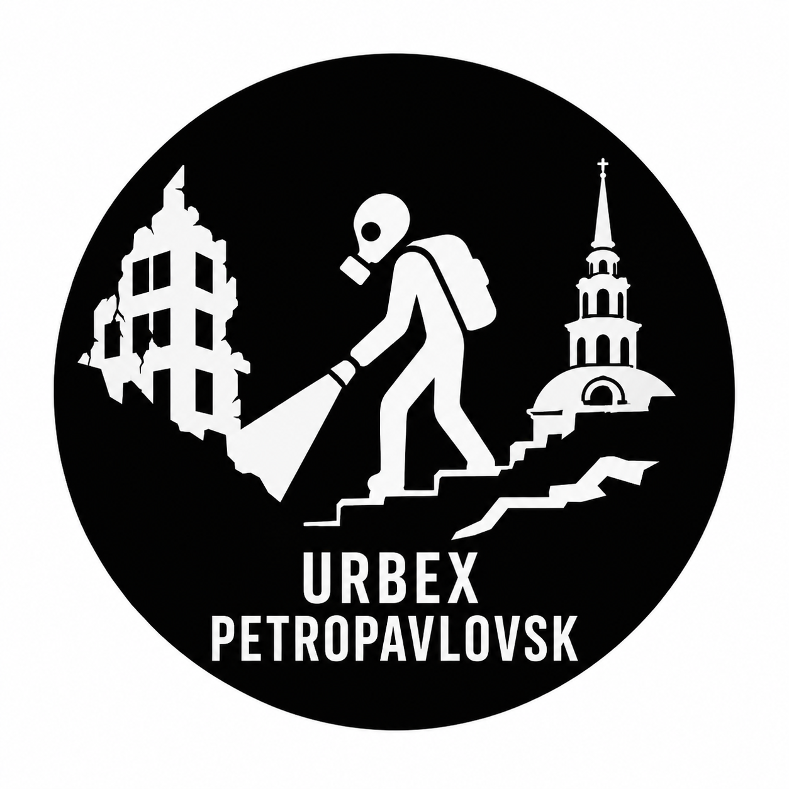

Urbex Petropavlovsk — каталог заброшенных объектов Петропавловска и Северо-Казахстанской области. Здесь публикуются фотографии заброшенных заводов, предприятий, исследовательских институтов, бомбоубежищ, подземных сооружений и других объектов урбан-исследований.
В каталоге представлены СевНИИЖ и Изолит. Проект постепенно пополняется новыми фотографиями, описаниями и материалами о заброшенных местах Петропавловска.

Есть фотографии заброшек, бомбоубежищ, подземных объектов или интересная информация?
Присылайте материалы в Telegram:
@MopsPugJopa